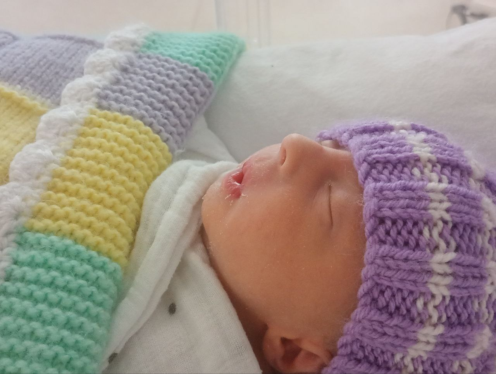
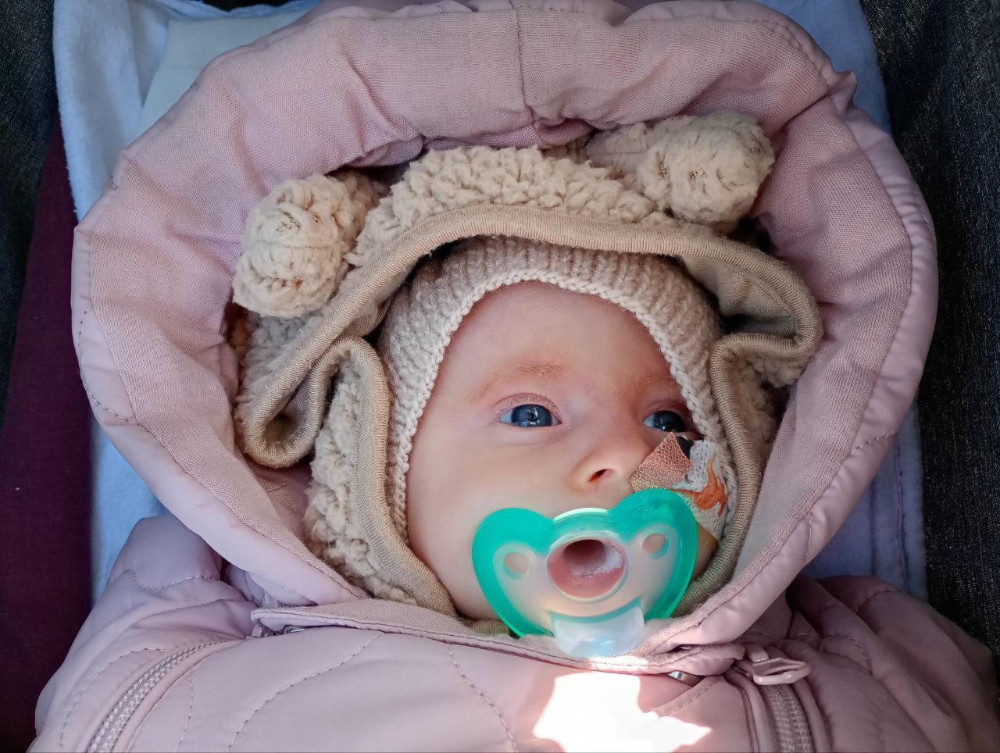
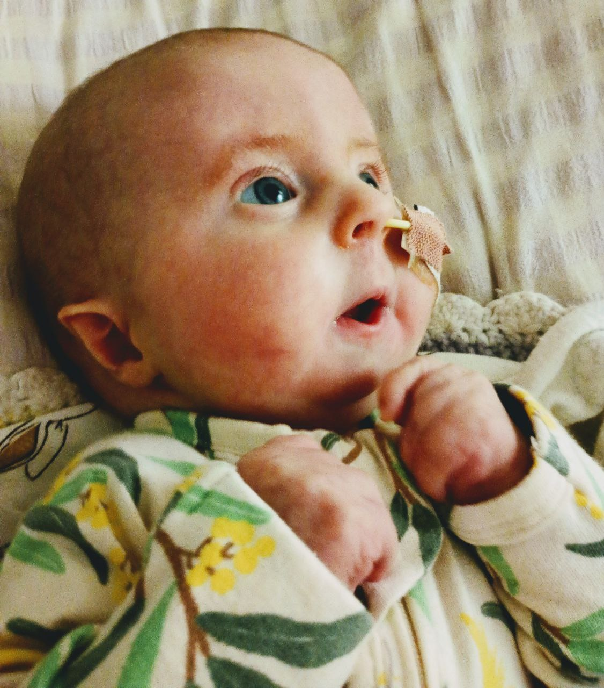
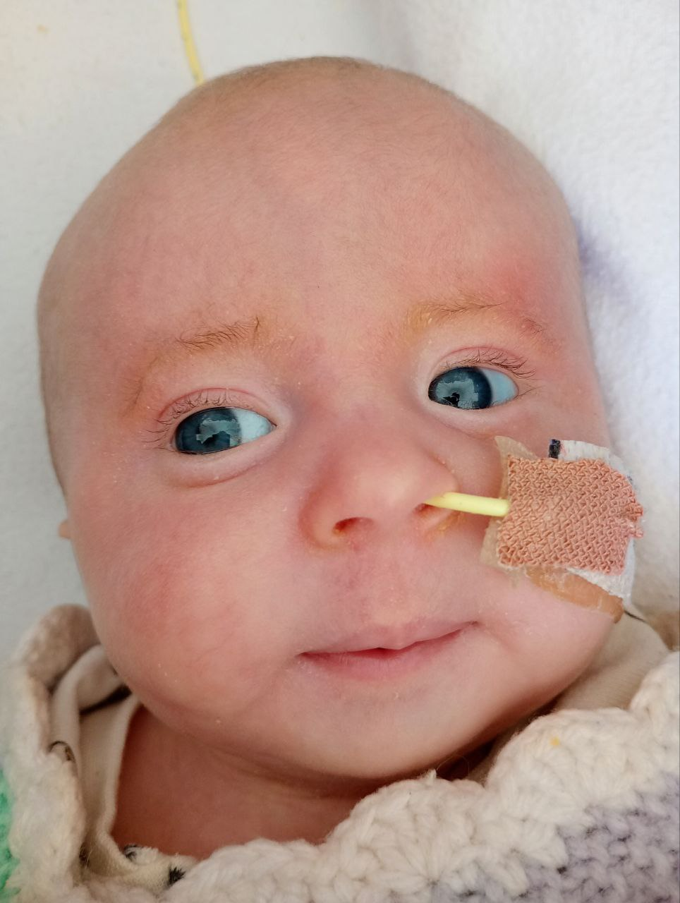
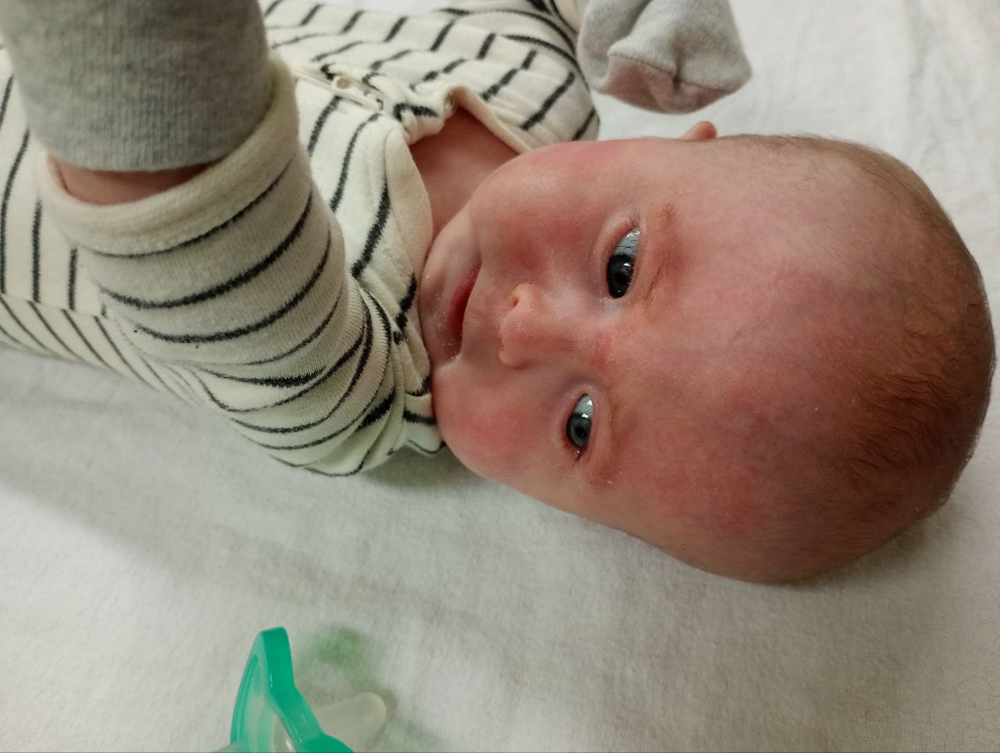
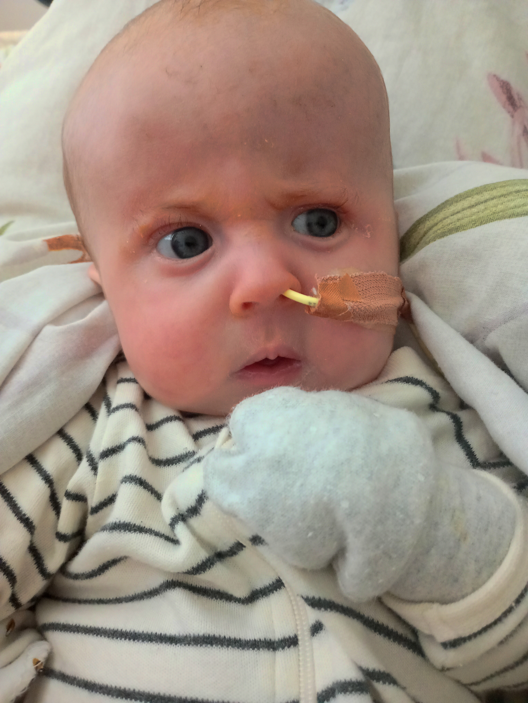

Lea's story
Нежнее нежного лицо твое,
Белее белого твоя рука,
От мира целого ты далека,
И все твое — от неизбежного.

Meet baby Lea. She was born with full Trisomy 18 (known as Edwards syndrome), a chromosomal abnormality that occurs in 1 in 5,000 pregnancies. 85-90% of fetuses with this syndrome do not survive to birth, and most of the remaining ones die in the first hours/days/weeks after birth. Only 5 percent survive to one year.
Here we share her wonderful journey, full of Love, Care, and Tenderness.
We didn’t know about the exact diagnosis until Lea was born. This pregnancy was my second (we have a 12yo son) and was as easy as the first one: we extensively travelled, did active sports like cycling and skiing, I worked till one week before the delivery. But during an ultrasound check at 26 weeks, we discovered our baby had a moderate size VSD, bilateral superior vena cava, horseshoe kidney, and thinner corpus callosum. Otherwise she looked normal. We met with geneticists who suspected that these conditions are not independent, and might have a genetic cause. Around 30 weeks, her growth slowed down, and she was in a breech position. She didn’t turn till 36 weeks and I’ve decided that I would opt for a c-section as it’s safest for her. I delivered her on the 18th of June. She was born on the 38th week, 2.2 kg only. She was on artificial ventilation for a couple of days but then managed to breath herself (with 100% O2 saturation). She also did great at regulating her body temperature!
She stayed in NICU for 3 weeks, until her weight started gradually increasing, thanks to NG tube feeding! I came there daily at 5am and left around 10pm, trying to be with her most of the time, expressing milk every 2 hours, doing lots of cuddles and skin-to-skin. During that time, we learned about her diagnosis. Learning about it was the most painful experience we ever had in my lifetime. But, knowing the odds, we felt like it’s a miracle that she is with us and is feeling good, showing zero signs of pain or suffering. While in NICU, she was treated like a little princess. Indeed, she looked like a little fairy, and most nurses admired her so much! They chatted with her and played Disney lullabies for her. (We are immensely grateful to the NICU team for taking care of us!) Most of the time, Lea would be either sleeping, or exploring the world around, in a very relaxed manner. So relaxed that we felt like she came to this world to chill. Occasionally she would start crying, signaling that she is either hungry or needs a nappy change, just like a normal child, but very quietly.
In early July she moved home. Our cardiologist assured us she should be fine for the next ~3 months, until her lung pressure starts to go down. I felt so happy that she was discharged and would see the world outside the hospital. Spring was early this year, and many trees, flowers started blooming already. Our daily routine began. We fed her every 3 hours with EBM, changed nappies, played and chatted with her. She enjoyed cuddles, and we shared lots of love and warmth with her. We also had regular checks with nurses, and many other specialists at RCH, almost every day or two.

Here is Lea watching a shadow theatre at home.
I remember both our pediatrician and dietician saying that she is doing a fantastic job. I just cannot express how much these words supported me in taking care of her (Jye and Tayla, THANK YOU!). And, of course, as long as she was gaining weight, I was happy.
Overall, Lea was developing almost like a normal baby, a bit slower, but gradually hitting major milestones: she made eye contact, could hold her head, in October I started breastfeeding her directly (not much, but at least something). But she didn’t smile in response, although she could show her tongue as I showed her mine. She smiled regularly while sleeping, or sometimes during the day, but without any particular stimulus.
Surprisingly, she enjoyed her appointments a lot. We think she liked being given special attention and care. During one of her hearing sessions (we had an issue with her middle ear) we could not get her to sleep – she felt so excited about all the wires and sensors she had on her head!
Things started to deteriorate when she was almost 4 months old. On Oct 14th, when we were at home, she suddenly turned blue while lying on her back. We panicked, I started doing CPR, then put her on my shoulder facing down and took her outside to get more fresh air. It worked, her face color was back to normal. But on the same day, a few hours later, her NG tube pulled out, and we had to go to emergency to change it. There, nurses also did X-Ray to check the position of her new tube and noted that her heart size is relatively large as well as her saturation levels were a bit lower.
Here is Lea during her monthly NG tube change.
From that day, although generally being normal, she would at times become pale or blueish during her sleep (especially deep sleep), it was scary. During her heart check, we found that her O2 saturation level was around 87–92, the hole was still there, and her lung pressure still didn’t go down as expected, that was a worrying sign. After talking with the cardiologist, somewhere deep inside I felt like this is the end but still tried to stay optimistic. We tried to spend as much time outside enjoying nature together as possible, sharing as much love as we could. But, at the same time, I was so exhausted with 24x7 feeds every 3 hours (and expressing milk for each) and sleepless nights. I started feeling that I am just not strong enough for this. I admired so many parents of children with special needs whom I met at RCH, their inner strength and hope.
Here is Lea half-sitting with my laps behind her during one of our morning chats.
On Oct 29th, when I was holding Lea on my lap and engaging with her, she started responding by mimicking my facial expressions and simple sounds I made (like pursing her lips to produce the “uuuuuu” sound). We had about an hour of very close contact, and she smiled at me. I was impressed, we had never had such a great and intimate contact before.
On Oct 30th, around 6pm, we started decorating our front-yard for Halloween. I was with Lea outside and noticed she became a bit pale while sleeping. I stayed calm, as she would usually turn to her normal color within 5-10 minutes. But this time, it didn’t happen and her nose and fingers felt cold. I decided to go back home to check on her properly and maybe put more clothes on her. There, I noticed that she was becoming unresponsive.
My spouse called 000 while I started doing CPR. Within a few minutes, a fire brigade who was close by arrived, they continued CPR, put a mask on her. Then an ambulance and intensive therapy arrived as well. For the next one hour or so a team of around 15 people worked hard to bring her back but her heart didn’t start. She decided to leave us this time. Too soon. Too quick.
Within just 4.5 months Lea taught us so much about love, care, and the value of every single day of our life. A beautiful and great soul who chose us as her parents. She had a chance to meet so many different people, and enjoyed every single opportunity to interact with them. We would like to thank everyone who supported us: Liz, Jye, Darren, Tayla, Alex, Ioakim, James, Naomi, Angela, Katerina, Fiona, Leonie, Rachel, Karen, Kara, Tanya, Sarah, George, Sinead, nurses from RWH and RCH, and many-many others!
PS Here is a video of Lea and me during one of our walks. I am asking Lea if she feels hot (Melbourne spring weather is so unpredictable!). And, at some point, she shakes her head and responds like "Nah!". This was a very touching moment.
Lea, our wonderful baby girl. Quand l'amour est grand, la tendresse est infinie.